XX/XX/2026
+ The New Sylenth Logo. +The old Sylenth logo was just very basic. Unmodified Futura Font, All Caps, "SYLENTH".
At the time of its creation, I had been watching a lot of Channel 4's UTOPIA, and was heavily inspired by its visual style and so, opted to use the font that was seen in each episodes' title card and the Sylenth logo remained this way for a good few years.
Then in August of 2026, I had decided that I wanted a new logo, something more than just a simple "name with custom font". So firing up Affinity, and taking inspiration from areas like the original Orange Box website, System Shock 2 and others, I had made this.

Some may recognize the quote as being from Kun Lan in Killer7, one of my favourite games.
The icon next to it is the symbol used in the Portal series to signify if a Test Chamber features a Cube Dropper, I've been using it as an avatar on various social media platforms for a long time now.
But I knew that if I wanted to use this for more than just my personal website, like using it for my games, I'd have to use a different symbol than one from a property that I obviously don't own.
Luckily I had a suitable one available.
With a quick replacement of it and the quote to an original one, we get...
Thing is though, this was completed by the end of August, but took until now to actually be implemented into the website, why?
Been busy, mainly with my masters degree and I still have to bring my digital portfolio to this new website design, to unify everything, still working on it.
Until then.